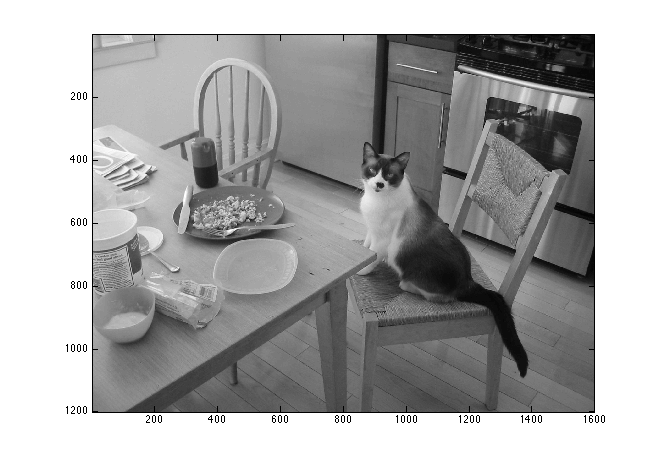
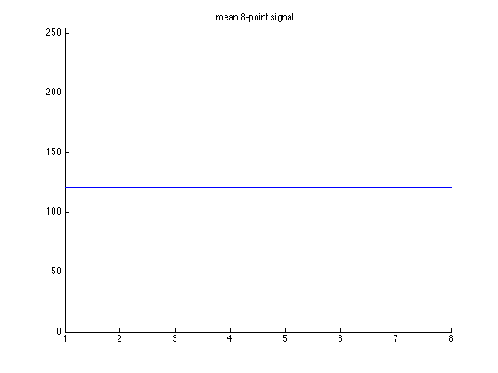
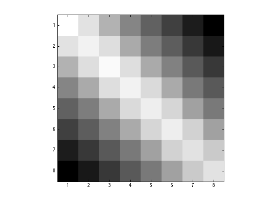
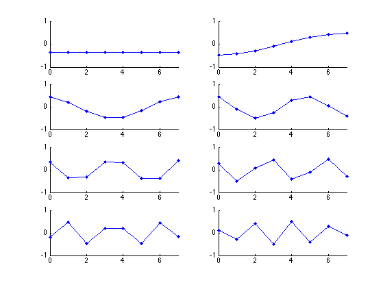

Transforms - PCA
Find PCA for image data
Contents
Start
clear
Load image
a = imread('IMG_2616.jpg'); a = rgb2gray(a); a = double(a); figure(1) clf imagesc(a); colormap gray axis image
Extract sequences of length 8
% Ensure that the number of rows is a multiple of 8 [N1, N2] = size(a); M1 = 8*floor(N1/8); a = a(1:M1,:); % convert to single one-dimensional array x = a(:); % reshape into array where each column is an 8-point sequence x = reshape(x,8,M1*N2/8); size(x)
ans =
8 240000
Compute and remove mean
m = mean(x,2); % average 8-point sequence figure(2) clf plot(m) ylim([0 255]) box off title('mean 8-point signal') % note: practically a constant! % Subtract 8-point mean signal from each 8-point signal x2 = bsxfun(@minus, x, m);
Compute covariance matrix
N = size(x2,2); R = (1/N) * x2 * (x2'); size(R)
ans =
8 8
figure(3)
clf
imagesc(R)
colormap(gray)
axis image
 Compute PCA
Perform eigen decomposition of covariance matrix. The orthonormal matrix of eigenvectors is the KLT
[V, D] = eig(R);
% check that R = V * D * V';
err = R - V * D * V';
max(abs(err(:)))
ans = 1.1369e-11
% eigenvalues
diag(D)
ans =
1.0e+04 *
1.7574
0.0380
0.0119
0.0051
0.0024
0.0007
0.0001
0.0000
Display PCA basis vectors
Notice how similar the PCA basis vectors are to the DCT basis vectors! The first vector is a constant vector (approximately); the 2nd vector is like a half-cycle of a cosine waveform; the 3rd vector is like a whole cycle of a cosine waveform; etc.
figure(4) clf for k = 1:8 subplot(4,2,k) plot(0:7, V(:,k), '.-', 'markersize', 12) box off xlim([0 7]) ylim([-1 1]) end orient landscape print -dpdf PCA_from_image_data